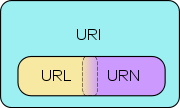
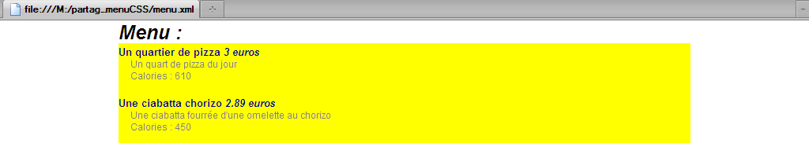
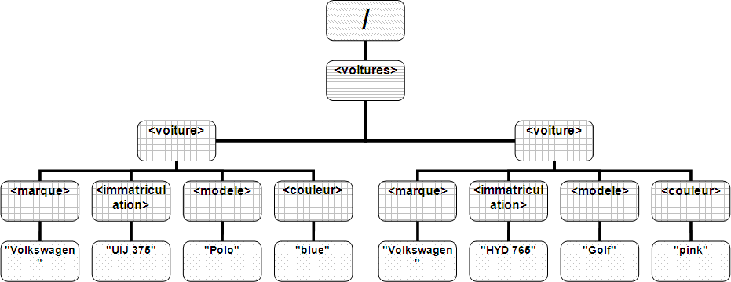
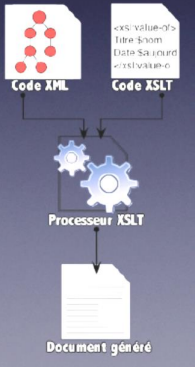
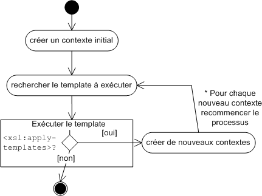

Introduction :
Ce syllabus est le support du cours de XML de 2ème année de Bac informatique de gestion de l'Institut Paul Lambin.
L'objectif de ce cours est de permettre à l'étudiant de comprendre les structures de données XML ainsi que leurs validations par des DTD et des XML Schema. Les étudiants comprendront également les avantages de telles structures et surtout comment les manipuler. Ensuite, ils comprendront comment lire, modifier et créer des documents XML en Java. Enfin, ils apprécieront la puissance des feuilles XSLT et des requêtes XQuery combinés aux expressions xPath.
Les objectifs intermédiaires sont les suivants :
-
En ce qui concerne le XML :
-
Compréhension de la syntaxe et de la structure d'un document XML.
-
Développement de documents XML.
-
-
En ce qui concerne les DTD :
-
Compréhension de la syntaxe, de la structure, de l'unité et des limites des DTD.
-
Développement de DTD.
-
-
En ce qui concerne les XML Schema :
-
Compréhension de la syntaxe et de la structure des XML Schema.
-
-
En ce qui concerne des parseurs XML en Java :
-
Développement de parseur de type SAX et DOM.
-
-
En ce qui concerne les feuilles XSL et le XPath :
-
Compréhension de l'usage des feuilles de style XSL, du langage XSLT et des expressions XPath.
-
-
En ce qui concerne les requêtes XQuery :
-
Développement de requêtes XQuery.
-
Ce syllabus s'articule autour de 7 grands chapitres :
-
Les bases XML : le vocabulaire XML, les règles de composition et de formulation de document XML bien formé.
-
DTD : la validation des documents XML par l'usage des Document Type Definition.
-
XML Schema : la validation des documents XML par l'usage des XML Schema. Comparaison avec les DTD.
-
Java et XML : la manipulation en Java de document XML.
-
XSL : la transformation des documents XML par l'usage du eXtensive StyleSheet Language et du eXtensible Stylesheet Language Transformation.
-
XPath : la recherche simple d'information dans les documents XML.
-
XQuery : la recherche avancée d'information dans les documents XML.
Les documents XML :
-
Introduction :
-
Les principes du XML :
-
XML, un langage de balisage :
XML signifie eXensible Markup Language, ce qui signifie langage de balisage de données extensible. Le balisage désigne les règles qui doivent être utilisées pour concevoir les balises. En mer, une balise est une perche surmontée d'un objet visible qui indique un danger.
En informatique, une balise est une marque destinée à l'identification, la description ou la mise en forme d'un élément de document. Elle définit le contenu au niveau sémantique. Les balises délimitent donc les données d'un document; elles permettent de les marquer. On parle de métadonnées qui permettent de donner du sens aux données.
Prenons un exemple, considérons la chaîne de caractères suivante : "Rue de l'arbre, 43 à 1300 Wavre".
Nous comprenons tous que les données de l'exemple ci-dessus correspondent à une adresse postale. Notre cerveau a automatiquement compris l'information contenue dans ces données et nous avons "inconsciemment" ajouté des métadonnées qui nous ont permis de comprendre l'adresse en tant que telle.
Un système informatique est initialement dépourvu de telle intelligence et comprend donc ces données comme une chaîne de caractères et rien de plus. C'est donc à nous de structurer ces données afin qu'elles constituent de l'information, c'est-à-dire qu'elles véhiculent du sens. Nous entendons ici le terme information comme des données et des métadonnées qui les décrivent (Information = donnée + métadonnée).
Afin de structurer les données, nous allons utiliser des métadonnées qui permettront de restituer la sémantique voulue. Effectivement, automatiquement, nous avons perçu cette chaîne comme une adresse; inconsciemment, nous avons placés des métadonnées sur les données. Une métadonnée est une donnée qui permet de décrire une donnée, qui donne du sens à une donnée.
Plaçons les balises dans notre chaînes de caractères :
<adresse> <rue>Rue de l'arbre</rue> <numero>43</numero> <codePostal>1300</codePostal> <ville>Wavre</ville> </adresse>Notre chaîne de caractères ainsi balisée prend tout son sens et devient de l'information !
-
Les différences entre HTML et XML :
Le HTML (HyperText Markyp Language) est également un langage informatique basé sur SGML, qui décrit les différents éléments d'un texte à l'aide de balises, en vue de sa publication sur internet. Le XHTML (eXtensible HyperText Markup Language) est le HTML qui respecte les règles du XML.
Le XML et HTML ont pour point commun d'être des langages de balisage reponsant sur le SGML mais ils sont bien et bien différents dans leur usage et dans leur intention. Le tableau ci-dessous compare le XML et le HTML.
HTML XML Langage de présentation des données Langage de structuration des données (importance de la sémantique) Interprétation dépendante des browsers Information toujours pareille Nombre de tags définis par le langage Nombre illimité de tags définis par l'utilisateur Conçu uniquement pour le Web Conçu pour toutes manipulations (transport ou stockage de données) Peu de rigueur dans la vérification de la syntaxe.
Exemple : un tag non fermé ne provique pas obligatoirement une erreur.
Vérification intransigeante. Tant syntaxique que structurelle (via DTD par exemple). -
XML - version 1.0 ou version 1.1 :
Le W3C a tenu à ce que la norme reste inchangée depuis sa publication initiale malgré la publication d'errata et d'éditions.
Malheureusement la norme Unicode n'a pas eu la même stabilité. La version Unicode 2.0 sur laquelle se base la version 1.0 de XML a évolué vers la norme 4.0 incluant de nouveaux caractères.
La version 1.1 du XML prend donc en compte ces nouveaux caractères. Il s'agit donc d'une évolution mineure par rapport à la version 1.0.
La version 1.0 reste donc tout à fait variable. Il est d'ailleurs conseillé de n'utiliser la version 1.1 que quand cela est réellement nécessaire car beaucoup d'applications ne sont pas encore compatibles avec la version 1.1.
XML 1.1 updates XML so that it no longer depends on the specific Unicode version: you can always use the latest. It also adds checking of normalization, and follows the Unicode,line ending rules more closely. You are encouraged to create or generate XML 1.0 documents if you do not need the new features in XML 1.1; XML Parsers are expected to understand both XML 1.0 and XML 1.1.
http://www.w3.org/XML/Core -
SGML :
En 1986, un standard voit le jour dans le domaine de la gestion documentaire : SGML (Standard Generalized Markup Language, Standard ISO n°8879). SGML est un langage de balisage établi pour créer d'autres langages de balisge. La complexité de mise en oeuvre du SGML en avait limité l'usage à de très grands systèmes documentaires. En 1996 une équipe conduite par Jon Bosak de Sun Microsystems décide de créer une version du SGML plus simple et mieux adaptée aux besoins d'échange de données sur le Web. Le XML est né. En quelques mois, il raille tous les efforts dans ce domaine et le W3C publie la première version le 10 février 1998. Les spécifications du XML tiennent sur 26 pages à comparer aux 500 5.s du SGML !
XML c'est 20% de la complexité de SGML et 80% de ses capacités.
XML est un sous ensemble de SGML. De telle sorte, tout document XML valide est aussi un document SGML valide.
-
Les usages du XML :
Citons quelques exemples d'utilisation du XML :
-
On utilise du XML en tant que fichier de propriétés qui permet la configuration d'un serveur ou d'une application.
-
Afin de standardiser des échanges d'informations entre diverses applications Web par exemple, c'est-à-dire des web services, on se conforme à des standards qui reposent sur le XML (WSDL (Web Services Description Language), SOAP (Simple Object Access Protocol) et UDDI (Universal Description Discovery and Integration)).
-
Une source d'information peut avoir plusieurs utilisations ou présentations. Dans ce cas, le XML permet de structurer l'information dans un seul document (une seule source) et permet l'affichage, l'impression, ou encore mise à disposition sur un CD-ROM, (...) et ce avec plusieurs présentations différentes.
-
On utilise également le XML comme une "mini cache". Quand un fichier XML est la source de données d'une page Web (en HTML), il est possible d'y opérer des sélections, de faire une nouvelle recherche sans refaire transiter l'information sur le net.
-
-
-
Définitions :
-
Les caractéristiques du XML :
Il s'agit d'un langage de balisage de données comme expliqué ci-dessus mais bien plus encore...
-
XML a été conçu pour manipuler des données (transporter et stocker).
-
XML permet un nombre illimité de balises; chacun peut en créer.
-
XML rend les données auto-descriptives.
-
XML est international; il utilise le standard Unicode, un système d'encodage des caractères qui permet de mélanger des textes dans la plupart des alphabets du monde. Unicode est une norme informatique, développée par le consortium Unicode, qui vise à donner à tout caractère de n'importe quel système d'écriture de langue un nom et un identifiant numérique, et ce de manière unifiée, quelle que soit la plate-forme informatique ou le logiciel.
-
XML est une recommandation du W3C qui est organisme de standardisation qui met en oeuvre des normes Web. Pour en savoir plus sur la recommandation XML : http://www.w3.org/XML/. Le XML est donc indépendant au point de vue :
-
Plate-forme
-
Vendeur / constructeur
-
Langage de programmation
-
-
-
Vocabulaire :
- Balise
-
Une balise est un délimiteur de données ou encore une métadonnée. En anglais, on parle de tag. Une balise est comprise entre les signes < et >. Il existe des balises ouvrantes et fermantes. Une balise ouvrante est une balise qui ouvre un élément tandis qu'une balise fermante le ferme. Une balise fermante commence par /.
Exemples :
-
Une balise ouvrante livre : <livre>
-
Une balise fermante album : </album>
-
- Élément
-
Un élément est composé d'une balise d'ouverture, des données et de la balise de fermeture correspondante.
Élément = balise d'ouverture + (donnée textuelle ou sous-éléments) + balise de fermeture
Exemples :
<titre>Les Misérables</titre> <livre> <titre>Les Misérables</titre> <auteur>Hugo</auteur> </livre> - Élément vide
-
Un élément vide est un élément sans aucune donnée. Voici deux manières similaires d'écrire un élément vide :
<vide></vide> <vide/> - Attribut
-
Un attribut est un descriptif que l'on place dans uen balise ouvrante. Un attribut porte un nom et contient une valeur donnée, c'est-à-dire une donnée textuelle, entre guillemets. Une balise d'ouverture peut contenir un ou des attributs mais une seule fois chaque attribut.
Exemples :
<personne sexe="F">Lisa</personne> <animal race="chien"/> - Élément racine
-
L'élément racine, root element, est l'élément principal du document XML. Il englobe tous les autres éléments.
Dans l'exemple ci-dessous, carnet.xml, carnet est l'élément racine du document XML :
<carnet> <personne titre="Mme"> <nom>Leconte</nom> <prenom>Emmeline</prenom> <contact> <tel>027644688</tel> <bureau>028</bureau> <email>emmiline.leconte@ipl.be</email> </contact> </personne> <personne titre="Mr"> <nom>Debacker</nom> <prenom>Michel</prenom> <contact> <tel>027644653</tel> <bureau>045</bureau> <email>michel.debacker@ipl.be</email> </contact> </personne> </carnet> - Document XML
- un fichier qui renferme uniquement du XML est ce que l'on appelle un document XML.
-
-
-
Écrire un document XML :
-
Le prologue du document XML :
-
La déclaration XML :
Un document XML débute par une ligne d'instruction de traitement qui permet de déclarer que le document est effectivement du XML. Une instruction de traitement commence toujours par <?.
La déclaration XML est obligatoirement la première ligne du document. Il ne faut placer ni commentaire, ni même une simple ligne vide avant elle.
Cette déclaration XML, facultative mais vivement conseillée, permet à l'application qui va manipuler ce document de l'interpréter correctement. Cette instruction ne fait pas partie du document en soi.
Exemple de déclaration XML :
<?xml version="1.0" encoding="UTF-8" standalone="yes"?>Les attributs présents version, encoding et standalone doivent être placés dans cet ordre.
-
version : version du XML utilisée dans le document, 1.0 en ce qui nous concerne;
-
encoding : le jeu de codage de caractères utilisé. Le jeu de caractères habituel pour le français est l'ISO-8859-1. Il a tendance à être remplacé par l'ISO-8859-15 en attendant la généralisation de l'Unicode. Par dafaut, l'attribut encoding a la valeur UTF-8. Cela permet à l'ordinateur de "savoir" quel caractère il doit afficher en réponse aux combinaisons de 1 et de 0 que contient le fichier sur le disque dur;
-
standalone : dépendance du document par rapport à une déclaration de type de document. Si standalone a la valeur yes, le processeur de l'application n'attend aucune déclaration de type de document extérieure au document. Sinon, le processeur attend une référence de déclaration de type de document. La valeur par défayt est no.
Après la déclaration XML, on peut déclarer éventuellement une feuille de style.
<?xml-stylesheet type="text/xsl" href="fichier.xsl"?> -
-
La déclaration de type de document :
Cette déclaration, lorsqu'elle est présente, permet de référencer la DTD qui permet la validation du document.
<!DOCTYPE elementRacine [ ... définition ou appel de la DTD ... ]>Cette section doit se trouver juste après la déclaration XML et juste avant l'élément racine du document. Après le mot DOCTYPE, il faut indiquer l'élément racine du document XML.
Ensuite, il faut préciser soit la définition de la DTD lorsqu'elle est interne au document XML soit l'appel vers la DTD externe au document XML.
-
-
L'élement racine :
Enfin, après la déclaration XML et la déclaration de la DTD, le document XML commence à proprement parler. Il débute toujours par l'élément racine (root element). Il s'agit de l'élément maître qui inclut tous les autres éléments du document. Il n'y a qu'un seul élément racine dans un document XML.
Finalement, un document XML se structure généralement comme suit :
<?xml version="1.0" encoding="UTF-8" standalone="no"?> <!DOCTYPE elementRacine [ ... définition ou appel de la DTD ... ]> <elementRacine> ... </elementRacine>Dans l'élment racine se trouvent la déclaration de tous les éléments du document, éventuellement avec des attributs. Ces éléments doivent respecter des règles lexicales quant à leur composition mais aussi des règles de formation qui définissent la syntaxe à respecter pour que le document XML soit bien formé.
-
Les règles de composition :
Tous les éléments constituants d'un document XML doivent être écrits en suivant les règles de lexicales énoncées ci-après.
Tout identificateur XML, c'est-à-dire nom de balise, nom d'attribut, valeur d'attribut de type ID, nom de namespace, ... doit :
-
Commencer par une des lettres de l'alphabet ou l'underscore (_).
-
Se poursuivre avec des lettres de l'alphabet, des chiffres, des underscores (_), des tirets (-) ou des points(.).
-
Absolument ne pas contenir d'espace.
-
Ne pas contenir de deux points (:) car ceux-ci sont réservés.
Attention XML est sensible à la casse : A n'est pas a ! b n'est pas B, ...
Dans la suite (partie parlant de la DTD), nous abordons le type ID des attributs.
-
-
Les règles de formulation :
Un document XML est bien formé (well-formed XML document) est un document XML dont la syntaxe est correcte.
Cela signifie qu'il :
-
Respecte les règles de composition énoncées ci-dessus.
-
Renferme en première ligne la déclaration XML.
-
Les valeurs d'attribut XML doivent toujours être entre guillemets.
-
Se compose d'éléments qui se correspondent de manière hiérarchique. Les éléments XML doivent être positionnés correctement. Ce point est détaillé ci-après.
Dire que les éléments doivent se correspondre signifie qu'il faut veiller à ce qu'un élément qui commence, dans un élement se termine bien dans ce même élément.
Par exemple, <tag1><tag2> ... </tag2> </tag1> est bien formé car tag2 débute et se ferme dans tag1. Mais <tag1><tag2> ... </tag1> </tag2> n'est pas bien formé car tag2 se ferme après tag1.
Remarquez que les règles de formulation sont très permissives. Des valeurs peuvent flotter, c'est-à-dire se trouver en dehors de balises (sauf de l'élément racine). Effectivement, l'élément <tag1> donnée 1 <tag2> donnée 2 </tag2> donnée 3 </tag1> est bien formé pourtant donnée 1 et donnée 3 ne sont pas dans des éléments précis, elles "flottent" dans l'élément tag1. Ces données seront plus difficilement accessibles dans tout parseur, c'est pourquoi il est vivement recommandé de ne pas faire flotter de donnés.
Attention, il ne faut pas confondre la notion de document bien formé avec celle de document valide, qui se définit comme un document XML bien formé dont la structure obéit à un modèle (ou schéma) donné par une DTD ou un XML Schema.
-
-
-
Les données textuelles :
Notons au préalablable que les caractères blancs sont l'espace, la tabulation, le retour chariot (carriage return) ou le passage à la ligne (linefeed). La différence entre le retour chariot (\r) et le passage à la ligne (\n) est historique. Elle trouve son origine dans les machines à écrire, à la fin de la ligne écrite on doit faire un retour du chariot pour se positionner en début de ligne et tourner le rouleau d'un cran pour passer à la ligne suivante. En Windows, le passage à la ligne suivante se marque par l'usage d'un retour du chariot et d'un passage à la ligne (\r\n). En Linux, il suffit de faire un passage à la ligne (\n).
Les données textuelles sont les valeurs qui apparaissent au sein d'un élément ou comme valeur d'un attribut.
Elles peuvent se composer de caractères blancs et de caractères imprimables du jeu de caractères utilisé dans le document XML exceptés quelques caractères notamment "<" réservé au balisage, "&" pour l'encodage des caractères spéciaux, ...
Les caractères "<" et "&" doivent donc être codés par une référence de caractères ou par une entité prédéfinie sauf s'ils sont au sein d'une section CDATA (Character Data, c'est-à-dire n'importe quelle chaîne de caractères) ou d'une instruction de traitement.
" et ' doivent également être codés dans une donnée textuelle.
Par exemple :
<dessin_anime>Tom & Jerry</dessin_anime>-
gestion des caractères blancs :
La gestion des caractères blancs est différente pour les éléments et les attributs.
-
pour les données textuelles comprises dans la valeur d'un attribut, le parseur effectue une normalisation qui consiste à remplacer les caractères blancs par des espaces.
-
pour les attributs de type autre que CDATA, le parseur remplace toute suite de caractères blancs par un seul espace et il supprime les caractères blancs en fin ou début de valeur d'attribut.
Les caractères blancs contenus dans une donnée textuelle d'un élément sont par contre par défaut transmis par le parseur à l'application sauf s'il existe une DTD ou un XML Schema indiquant qu'il faut les ignorer. Effectivement, ces caractères ont parfois tout leur sens mais parfois il s'agit simplement d'une question de mise en forme. Le parseur ne peut pas toujours faire la différence entre ceux-ci.
Prenons un exemple :
<carnetAnniversaires> <anniversaire>, <date>1/4</date> <qui>Jean-Marc Dupond</qui> <qui>Mireille de la Fontaine</qui> </anniversaire> </carnetAnniversaires>Dans cet exemple, les blancs situés entre les balises <qui> et </qui> doivent toujours être conservés tandis qu'entre les autres balises, les caractères blancs sont là uniquement pour la mise en forme.
-
-
<!CDATA[ :
Une donnée textuelle peut contenir une ou plusieurs zones de données non structurées, c'est-à-dire zones CDATA. Une zone CDATA est une zone qui ne sera pas interprétée comme du XML mais comme une donnée; les balises qu'elle contient sont ignorées.
Par exemple :
<doc> <![CDATA[ Cette zone non structurée </p> permet de mettre des <balises> & autres dedans ... < div <ceQueJeVeux> > ]]> </doc> -
Les références de caractères :
S'ils ne sont pas reconnus directement par le type d'encodage (précisé dans l'attribut encoding de ligne de déclaration XML), kes caractères non-imprimables doivent être notés par une référence de caractères constitué du code décimal (ou hexadécimal) de ce caractère dans Unicode précédé de "&# et suivi d'un ";".
caractère référence é &#E9; è &#E8; ê &#EA; ë &#EB; î &#EE; ï &#EF; ô &#F4; ö &#F6; $  ² &#B2; Exemples :
<prenom>Am&#E9;lie</prenom> (Amélie) <nom>No&EB;l</nom> (Noël) <prix>45</prix> (45$)Toutes les références de caractères définies en Unicode est disponible sur http://www.unicode.org/.
-
Les références d'entité :
Un document XML peut contenir des références d'entité constituées du nom d'une entité précédé d'un "&" et suivi d'un ";". Une entité est une unité de stockage qui contient une partie d'un document XML.
Exemple :
<synopsis> Il était une fois dans une forêt lointaine, une jeune fille (jouée par &princesse;) qui dormait ... </synopsis>Dans l'exemple, princesse est une entité référencée. Le parseur remplacera celle-ci par le texte de remplacement correspondant dans la définition de l'entité.
La définition d'une entité se fait par le biais d'un DTD qui peut être interne au document XML ou externe.
Dans notre exemple, l'entité peut être référencée en interne comme suit :
<?xml version="1.0" encoding="ISO-8859-1"?> <!DOCTYPE synopsis [ <!ENTITY princesse "Jennifer Lopez"> ]> <synopsis> Il était une fois dans une forêt lointaine, une jeune fille (jouée par &princesse;) qui dormait ... </synopsis> -
Les entités prédéfinies :
Il existe en XML quelques entités prédéfinies pour coder les caractères spéciaux :
caractère référence signification & & ampersand < < less then > > greater then " " quote ' ' apostophe
-
-
Les commentaires :
En XML, un commentaire se note comme en HTML, car ils reprennent la syntaxe du SGML.
Ils commencent donc par <!-- et se terminent par -->. Ils peuvent être placés à n'importe quel endroit tant qu'ils se trouvent à l'extérieur d'une balise.
Exemples de commentaires valides :
<!-- ceci est un commentaire --> <elt> <!-- ceci est un commentaire --> Un peu de texte </elt> <!-- <commentaireCorrect> -->En raison de la compatibilité XML/SGML, la chaîne de caractères -- est interdite dans un commentaire.
-
-
Réflexion : choisir entre un élément et un attribut :
Faut-il utiliser un attribut ou un élément ? C'est une question souvent posée et qui mérite quelques réflexions ...
Il faut savoir avant tout que techniquement parlant, il n'y a pas de réponse à la question. Les applications XML traiteront l'information sans aucun problème avec des performances similaires.
Le choix qu'on pose dépend donc de divers facteurs tels que la lisibilité du document, la facilité d'encodage, également la concision que l'on veut apporter au document.
Voici quelques pistes :
-
L'usage d'éléments engendre des documents XML plus volumineux mais offre une meilleure structure et donc une meilleure lisibilité.
-
Si le séquencement a de l'importance, on privilégiera l'usage d'élément dans lequel l'ordre a toute son importance.
-
Un attribut ne peut être présent qu'une seule fois au sein d'un élément tandis qu'un élément peut être plusieurs fois présent.
-
En ce qui concerne les données contenues, un élément peut être vide. Dans un attribut, le contenu peut être une valeur par défaut, ou encore être une énumération de valeurs possibles ou encore imposer l'unicité du contenu dans l'ensemble du document.
-
Les DTD :
-
Définition :
Une Document Type Definition fournit comme son nom l'indique une définition des types du document XML. Une DTD décrit de manière précise quels éléments peut contenir un document XML, dans quel ordre ils peuvent apparaître et quels sont leurs attributs.
Lorsqu'un document XML est bien formé, c'est-à-dire qu'il respecte les règles de formulation, et qu'il respecte également une DTD, on dit que ce document est valide. Une DTD fournit donc une définition de la structure et des règles qu'un document XML doit suivre pour être valide.
Dans une DTD, il y a donc des déclarations d'éléments, d'attributs et d'entités. Il y a également des notations mais ce pont n'est pas abordé dans le cours. Nous nous contentons des définitions d'éléments et d'attributs.
-
Déclaration de DTD :
La déclaration d'une DTD peut être effectuée en interne, directement dans la déclaration du type de document, ou alors en externe, dans un fichier séparé dont l'URI est donné dans la décaration du type de document.
URI : Uniform Resource Identifier ͛§; String qui permet d'identifier une ressource sur internet
URN : Uniform Resource Name ↔ String correspondant au nom de la ressource
URL : Uniform Resource Locator ↔ String correspondant à l'adresse de la ressource
La déclaration d'une DTD qu'elle soit interne ou externe se trouve entre la déclaration XML et la racine du document. Dans un document HTML, la DTD doit être déclarée en première ligne.
La déclaration d'une DTD débute toujours par <!DOCTYPE suivi du nom de l'élément racine du document. Attention, la définition de l'élément racine est propre au document XML, il ne s'agit pas d'une information fournie par une DTD (ni un XML Schema).
Prenons l'exemple d'une page HTML qui renferme égalemnt une déclaration de doctype :
<!DOCTYPE html ... <html> <head>...</head> <body>...</body> </html>html est le nom de l'élément racine du document.
-
Déclarer une DTD interne :
Par exemple :
<?xml version="1.0" encoding="ISO-8859-1" standalone="yes"?> <!DOCTYPE voitures [ <!ELEMENT voitures (voiture) * > ... ]> <voitures> <voiture>...</voiture> ... </voitures>Remarquez que dans la déclaration XML de l'exemple, l'attribut standalone prend la valeur yes puisqu'aucun DTD externe n'est déclarée. Pour rappel, par défaut, la valeur de standalone est no.
-
Déclarer une DTD externe :
Dans la déclaration du doctype, on trouve l'URI qui permet d'atteindre le fichier dont l'extension est ".dtd" externe. Dans cette déclaration, avant l'URI, on trouve le mot SYSTEM ou PUBLIC.
Le mot SYSTEM est utilisé pour signifier que l'URI de la DTD référencée est une URI relative au document XML.
Par exemple :
<?xml version="1.0" encoding="ISO-8859-1" standalone="no"?> <!DOCTYPE voitures SYSTEM "voitures.dtd"> <voitures> <voiture>...</voiture> ... </voitures>Le mot PUBLIC est utilisé pour signifier que la DTD référencée est publique. Dans ce cas, on précise l'idnetificateur public de cette DTD suivi de l'URI qui permet d'y accéder.
De façon similaire, dans les fichiers HTML, la déclaration de doctype est publique. L'identificateur public qui permet de signifier que le document HTML respecte la norme 4.01 strict est "-//W3C//DTD HTML 4.01//EN" et son URI est "http://www.w3c.org/TR/html4/strict.dtd".
Voici un exemple de document HTML qui référence la DTD 4.01 strict :
<!DOCTYPE html PUBLIC "-//W3C//DTD HTML 4.01//EN" "http://www.w3c.org/TR/html4/strict.dtd"> <html> <head> <meta http-equiv="Content-Type" content="text/html;charset=ISO-8859-1"> <title>Le titre de ma page</title> </head> <body> J'écris ici le contenu de ma page... </body> </html>Remarquez que les browsers ont des copies locales des DTD validant les documents HTML pour éviter l'explosion des demandes sur http://www.w3c.org.
Toutes les DTD publiques émises par le W3C sont disponibbles sur le site http://www.w3.org/QA/2002/04/valid-dtd-list.html.
-
Syntaxe :
En résumé, la déclaration d'une DTD peut s'écrire de cinq façons :
<!DOCTYPE racine [déclarations internes]> <!DOCTYPE racine SYSTEM "URI"> <!DOCTYPE racine SYSTEM "URI" [déclarations internes]> <!DOCTYPE racine PUBLIC "id_public" "URI"> <!DOCTYPE racine PUBLIC "id_public" "URI" [déclarations internes]>Il est effectivement possible de déclarer à la fois une DTD interne et une DTD externe. Dans un tel cas, c'est l'ensemble des définitions des deux DTD que le document XML doit respecter pour être valide. Si jamais une définition se trouve à la fois en externe et en interne, c'est la définition interne qui sera prioritaire.
-
-
Écrire une DTD :
Dans une DTD, on détaille les règles de validation de document XML. Il s'agit d'une énumération de règles de définition pour les éléments, pour les attributs ainsi que pour les entités.
L'ordre dans lequel les règles sont déclarées n'a aucune importance.
-
Déclaration d'élément :
-
<!ELEMENT :
Une déclaration d'élment dans une DTD permet de définir un élément et son contenu, c'est-à-dire ce qui se trouve entre sa balise ouvrante et sa balise fermante.
La déclaration d'un élément débute par <!ELEMENT suivi du nom de l'élément puis du format du contenu de cet élément et enfin >.
On distingue quatre types de format :
-
EMPTY
-
ANY
-
#PCDATA
-
Les formes composées
-
-
EMPTY :
EMPTY permet de déclarer qu'un élément doit toujours être vide, c'est-à-dire qu'il ne peut contenir aucun élément, ni aucune donnée textuelle.
Par exemple :
<!ELEMENT flag EMPTY><flag/> <flag></flag> -
PCDATA :
PCDATA, Parsed Character Data, indique qu'un élément peut contenir des données textuelles.
Par exemple :
<!ELEMENT texte(#PCDATA)><texte>Des textuelles...</texte>Il est possible de mélanger les données textuelles avec d'autres éléments, pour autant qu'ils soient correctement déclarés dans la DTD, en utilisant la barre verticale | et l'astérisque *. Le format à respecter est (#PCDATA | element1 | element2 | ...)*.
Par exemple :
<!ELEMENT texte (#PCDATA | flag)*><texte>Des données <flag/> textuelles... </texte> -
ANY :
Un élément dont le contenu est défini de type ANY peut contenir un mélange de données textuelles et de n'importe quels autres éléménts, pour autant qu'ils soient correctement déclarés dans la DTD.
Par exemple :
<!ELEMENT tout ANY> Pour autant que flag et texte soient correctement définis, comme ci-dessus.<tout> Du texte et des éléments <flag/> ou <texte> avec du contenu textuel </texte> </tout> -
Les formes composées :
Les formes composées permettent de déclarer des éléments qui contiennent uniquement d'autres éléments et pas de données textuelles.
Il s'agit de définir quels sont les éléments enfants que peut contenir l'élément en question et l'ordre dans lequel ils doivent apparaître. Kes éléments enfants doivent être correctement déclarés dans le fichier.
Une forme composée s'indique entre parenthèses. La parenthèse fermante peut être suivie du caractère ?, * ou + pour préciser un nombre d'occurences.
En résumé :
(contenu)? L'élément doit contenir 0 ou 1 fois le contenu. (contenu)* L'élément doit contenir 0 ou plusieurs fois le contenu. (contenu)+ L'élément doit contenir 1 ou plusieurs fois le contenu. (contenu) L'élément doit contenir 1 fois le contenu. Le contenu spécifié entre parenthèse peut prendre plusieurs formes :
-
Soit correspondre exactement à un élément déjà déclaré.
-
Soit correspondre à une suite d'éléments déjà déclarés séparés par des virgules.
(element1, element2, ...) -
Soit correspondre à un choix entre des éléments déjà déclarés séparés par une barre verticale.
(element1 | element2 | ...)
Dans les suites et les choix, chaque élément peut être suivi d'un ?, * ou + pour préciser un nombre d'occurences.
Par exemples :
<!ELEMENT personne (nom, prenom+, contact?)> Sachant que <!ELEMENT nom (#PCDATA)> <!ELEMENT prenom (#PCDATA)> <!ELEMENT contact (#PCDATA)><personne> <nom>Leconte</nom> <prenom>Emmeline</prenom> <prenom>Simone</prenom> </personne><!ELEMENT carnet (personne)*> Sachant que personne est défini ci-dessus<carnet> <personne> <nom>Leconte</nom> <prenom>Emmeline</prenom> <prenom>Simone</prenom> </personne> <personne> <nom>Debacker</nom> <prenom>Michel</prenom> </personne> </carnet><!ELEMENT client (personne | societe)> Sachat que personne est défini ci-dessus <,!ELEMNT societe (#PCDATA)><client> <personne> <nom>Leconte</nom> <prenom>Emmeline</prenom> </personne> </client>Enfin, dans une suite ou un choix, chaque élément peut être lui-même une forme composée.
Dans l'exemple suivant, un contact se compose d'un tel suivi de 0 ou plusieurs tel, gsm ou fax, ensuite éventuellement un email, enfin 1 ou plusieurs adresse :
<!ELEMENT contact (tel, (tel|gsm|fax)*, email?, adresse+à> <contact> <tel> 00 32 2 737 48 81 </tel> <fax> 00 32 2 737 28 07 </fax> <email> cap48@rtbf.be </email> <adresse> Bd Reyers n°52 1044 Bruxelles </adresse> <adresse> 5, chée de Bruxelles 1300 Wavre </adresse> </contact> -
-
-
Déclaration d'attribut :
-
<!ATTLIST :
La déclaration d'attributs permet de définir les attributs que peut ou doit contenir un élément du document.
La déclaration d'attributs pour un élément débute par <!ATTLIST suivi du nom de l'élément pour lequel on déclare les attributs puis la spécification de chacun des attributs que l'on veut déclarér et enfin >. Chaque déclaration d'attributs est séparée par un espace, une tabulation ou un retour à la ligne.
La spécification d'un attribut débute par son nom, puis son type et enfin une précision sur sa valeur par défaut.
On peut déclarer tous les attributs d'un élément dans une seule règle ATTLIST ou utiliser une règle ATTLIST par attribut :
<!ATTLIST element attr_nom1 TypeAttribut Presence attr_nom2 TypeAttribut Presence ...><!ATTLIST element attr_nom1 TypeAttribut Presence ...> <!ATTLIST element attr_nom2 TypeAttribut Presence ...> -
Les types d'attribut (TypeAttribut) :
Le type d'un attribut peut valoir :
- CDATA
-
CDATA, Character Data, représente une chaîne de caractères quelconques.
- Un choix entre valeurs
-
Une valeur choisie dans une liste de valeurs possibles, c'est-àdire un énuméré.
Par exemple (A|B|C), la valeur de l'attribut doit être une de celles listées : A, B ou C.
- ID
-
ID permet de définir un identificateur unique un élément du document. Donc chaque ID doit être différent au sein du document !
- IDREF
-
IDREF permet de définir un attribut dont la valeur doit correspondre à un attribut ID dans un des éléments du document.
- IDREFS
-
IDREFS pemret de définir un attribut dont la valeur doit correspondre à 1 ou plusieurs ID définis dans le document. Chaque ID doit être séparé par un espace.
- NMTOKEN
-
NMTOKEN permet de définir un attribut dont la valeur doit être un seul mot (sans caractère blanc).
- NMTOKENS
-
NMTOKENS permet de définir un attribut dont la valeur doit être plusieurs NMTOKEN séparé par un ou plusieurs caractères blancs.
- ENTITY et ENTITIES
-
Un attribut de type ENTITY doit contenir un mot qui doit correspondre à une entité déclarée dans la DTD. Pour le type ENTITIES, il s'agit d'une liste d'entités déclarées séparées par un ou plusieurs caractères blancs.
-
La présence de l'attribut (Presence) :
Après la précision du type de l'attribut, il faut déclarer la valeur par défaut ou son caractère obligatoire.
Il y a quatre valeurs possibles :
- #REQUIRED
-
L'attribut doit avoir une valeur; il n'y a pas de valeur par défaut. L'attribut est donc obligatoire.
- #IMPLIED
-
L'attribut peut être ignoré si aucune valeur n'est donné; il n'y a pas de valeur par défaut. L'attribut n'est pas obligatoire.
- "valeur_par_défaut"
-
L'attribut n'est pas obligatoire et il possède une valeur par défaut. Lorsque l'attribut n'est pas présent, c'est cette valeur qui sera utilisée par défaut.
- #FIXED "valeur"
-
Enfin, il est possible de fixer la valeur d'un attribut quand celui-ci est présent grâce au mot clef #FIXED suivi de ladite valeur. Dans ce cas, l'attribut lorsqu'il est présent ne peut jamais contenir que la valeur précisée entre guillemets.
Cette situation peut par exemple se rencontrer lorsque l'on souhaite travailler dans une devise bien précise et que l'on souhaite qu'elle apparaisse dans le document.
-
Exemples :
<!ATTLIST personne prenom CDATA #REQUIRED> <!ELEMENT personne (#PCDATA)><personne prenom="Pauline"> Ducobu </personne><!ATTLIST personne genre (male|femelle|indetermine) "indetermine"> <!ELEMENT personne (#PCDATA)><personne> Ducobu </personne><!ATTLIST personne genre (male|femelle) #REQUIRED> <!ELEMENT personne (#PCDATA)><personne genre="male"> Ducobu </personne><!ATTLIST personne freres IDREFS #IMPLIED ident ID #REQUIRED > <!ELEMENT personne (#PCDATA)><personne ident="_23">Pauline Ducobu</personne> <personne ident="_24" freres="_23">Robin Ducobu</personne><!ATTLIST form method CDATA #FIXED "POST"> <ELEMENT form (ANY)> <!ELEMENT input (EMPTY)><form method="POST"> <input ... /> </form>
-
-
Déclaration d'entité :
Il est possible de déclarer des entités dans une DTD de trois manières :
<!ENTITY nom="texte de remplacement"> <!ENTITY nom SYSTEM "URI"> <!ENTITY nom PUBLIC "id_public" "URI">La première forme permet de définir un texte de remplacement fourni entre guillemets pour un nom d'entité.
La seconde forme permet de définir, pour un nom, une URI qui contient la référence relative du fichier qui contient le texte de remplacement.
La dernière forme permet de définir une entité externe publique. Même principe que la déclaration de doctype public; voir la parrtie "Déclarer une DTD externe".
-
Les XML Schemas :
-
Introduction :
La norme XML Schema est une évolution des DTD. Conçu pour pallier les difficiences citées des DTD, elle propose bien plus de fonctionnalités.
Citons quelques uns des atouts des XML Schemas par rapport au DTD :
-
Le typage des données :
-
Il est possible via la définition d'un XML Schema de contraindre les valeurs des attributs ou des éléments. Les données peuvent désormais être des booléens, des entiers, des intervalles de temps, ... Il est même possible de créer de nouveaux types à partir de types existants.
-
-
La notion d'héritage :
-
Les éléments peuvent hériter du contenu et des attributs d'un autre élément.
-
-
Le support des espaces de noms :
-
Un espace de noms XML est une recommandation du W3C qui permet d'employer des éléments et des attributs nommés dans une instance XML.
-
-
La gestion des occurences :
-
Les indicateurs d'occurences des éléments peuvent être tout nombre non négatif (rappel: dans une DTD, on est limité à 0, 1 ou un nombre infini d'occurences pour un élément).
-
XML Schema est extrêmement puissant mais hélas très complexe...
Étant donné que XML Schema, c'est du XML, il est possible de valider tout XML Schema grâce à un validateur fournit par le W3C : http://www.w3.org/2001/03/webdata/xsv.
-
-
Utiliser un XML Schema - xmlns :
-
Déclarer un XML Schema :
Après avoir écrit un XML Schema, il faut le déclarer dans le document XML, tout comme on déclare une DTD. Nous n'allons pas ici entrer dans les détails de la notion d'espace de noms, mais simplement apprendre à valider un document XML d'après un XML Schema. On utilise pour ce faire le préfixe xmlns.
Dans le cas d'un référencement à un XML Schema public, équivalent à une DTD de type PUBLIC, on référence l'URI ainsi que l'URL du schéma public.
Considérons que l'on désire créer un document XML valide selon un XML Schema public localisé à l'URL suivante : http://java.sun.com/xml/ns/persistence/persistence_1_0.xsd. Ce XML Schema permet d'écrire des fichiers qui définissent la persistance d'une application Enterprise (EJB).
Peu importe, il s'agit d'écrire un document persistence.xml qui sera valide selon ce XML Schema public.
<persistance xmlns="http://java.sun.com/xml/ns/persistence" xmlns:xsi="http://www.w3.org/2001/XMLSchema-instance" xsi:schemaLocation="http://java.sun.com/xml/ns/persistence http://java.sun.com/xml/ns/persistence/persistence_1_0.xsd" version="1.0">L'élément racine est l'élement persistence avec les attributs dans l'ordre :
-
xmlns précise l'identifiant de l'espace de noms par défaut
-
xmlns:xsi précise qu'il faut employer le préfixe xsi pour s'adresser à l'espace de noms qui permet d'associer un XML Schema public : https://www.w3.org/2001/XMLSchema-instance.
-
xsi:schemaLocation permet de préciser l'URL de l'espace de noms qui permet de valider le document persistence.
Dans le cas d'une référence locale, correspondant à une DTD de type SYSTEM, on fait référence au XML Schema dans le document XML en utilisant l'attribut noNamespaceSchemaLocation, par <elementRacine xmlns:xsi="http://www.w3.org/2001/XMLSchema-instance" xsi:noNamespaceSchemaLocation="biblio.xsd">.
-
-
Espace de nommage - namespace :
L'usage d'espace de nommage permet d'éviter des confusions entre éléments d'espaces de noms différents.
Un espace de noms ou namespace en anglais :
-
Permet, grâce à un préfixe, l'usage de balises définies.
-
Permet la distinction entre les éléments du langage et ceux définis par l'utilisateur.
-
Est identifié par un URI.
-
-
-
Comprendre un XML Schema :
-
Le prologue :
Un XML Schema commence par une déclaration XML en prologue :
<?xml version="1.0" encoding="ISO-8859-1"?>Un XML Schema possède un élément racine : schema.
Cet élément schema ainsi que tous les autres éléments de XML Schema sont définis dans un espace de noms public dont l'URI est http://www.w3.org/2001/XMLSchema qui correspond au "schema des schemas".
Pour pouvoir utiliser cet espace de noms, il faut le déclarer via l'attribut xmlns. Cet attribut permet d'associer un préfixe (ou non) au schéma public.
Exemple :
<schema xmlns="http://www.w3.org/2001/XMLSchema">...</schema>L'élément ci-dessus déclare l'espace de noms, http://www.w3.org/2001/XMLSchema par défaut. Tout élément non préfixé du document sera automatiquement associé à cet espace de noms.
Il est également possible, et c'est ce que l'on fait la plupart du temps, d'associer un préfixe à un espace de noms. Dans un tel cas, tout élément de cet espace de noms devra être préfixé.
Exemple :
<xs:schema xmlns:xs="http://www.w3.org/2001/XMLSchema">...</xs:schema>En bref, un XML Schema se présente comme suit :
<?xml version="1.0" encoding="ISO-8859-1"?> <xs:schema xmlns:xs="http://www.w3.org/2001/XMLSchema"> <!-- déclarations d'éléments, d'attributs et de types ici --> </xs:schema> -
Les définitions d'éléments et d'attributs :
Exactement comme dans une DTD, on définit dans un XML Schema des règles pour les éléments et les attributs.
-
xs:element :
Pour déclarer un élément, on utilise l'élément xs:element dans lequel on précise dans les attributs le nom de l'élément (name) et son type (type) sauf s'il est anonyme.
-
xs:attribute :
Pour déclarer un attribut, on utilise l'élément xs:attribute dans lequel on précise dans les attributs le nom de l'éléméent (name) et son type (type) sauf s'il est anonyme. Si aucun type n'est précisé dans la déclaration d'un attribut, le type par défaut xs:anySimpleType sera utilisé.
- use
-
Pour préciser qu'un attribut est optionnel, obligatoire ou interdit, on précise l'attribut use avec comme valeur optional, required ou prohibited. La valeur par défaut est optional.
-
default-fixed :
Dans la déclaration d'un élément ou d'un attribut, on peut préciser des valeurs par défaut en utilisant l'attribut default.
On peut également préciser une valeur fixée pour un élément ou un attribut en utilisant fixed.
-
-
Type simple et type complexe :
Dans un XML Schema, les éléments peuvent être de type simple ou de type complexe tandis que les attributs sont toujours de type simple.
Un type simple permet donc de structurer une donnée contenue dans un attribut ou dans un élément qui ne possède pas de sous-élément ni d'attribut tandis qu'un type complexe sert à structurer des éléments qui se compose de sous-éléments ou qui possèdent des attributs.
-
Type anonyme :
Il est possible de nommer ou pas un type simple ou complexe. Il n'est pas toujours nécessaire de déclarer explicitement un nouveau type et décider de le garder anonyme.
Dans un tel cas, la déclaration du type se fait directement à l'intérieur la déclaration de l'élément ou de l'attribut :
<xs:element name="unElementComplexeAnonyme"> <xs:complexType> ... </xs:complexType> </xs:element>OU encore
<xs:attribute name="unAttributSimpleAnonyme"> <xs:simpleType> ... </xs:simpleType> </xs:attribute>Voici un exemple de définition d'attribut resultat dont la définition du type pourcent est anonyme :
<xs:attribute name="resultat"> <xs:simpleType> <xs:restriction base="xs:integer"> <xs:minINclusive value="0"/> <xs:maxInclusive value="100"/> </xs:restriction> </xs:simpleType> </xs:attribute> -
Type simple :
-
Les types existants :
Les types simples sont utilisés pour définir la valeur des attributs ou la valeur des éléments qui ne contiennent que des données textuelles et qui ne possèdent pas d'attributs.
Voici 3 exemples, deux définitions d'attributs et une définition d'élément :
<xs:attribute name="nom" type="xs:string"/> <xs:attribute name="id" type="xs:decimal"/> <xs:element name="date" type="xs:date"/>XML Schema propose un grand nombre de types simples prédéfinis. Référez-vous au site du W3C pour l'ensemble des types prédéfinis dans XML Schema : http://www.w3schools.com/. Le tableau ci-après reprend un sous-ensemble de ceux-ci :
simpleType Exemples Notes string Bonjour Chaîne de caractères byte -1 126 binary 456E789 integer -126789 -1 0 1 126789 long -1 1267896543213 short -1 12678 decimal _1.23 0 123.4 1000.00 float -INF -1E4 -0 0 12.78E-2 12 INF Floating point 32 bits double Floating point 64 bits boolean true false time 13:20:00.000 13:20:00.000-05:00 13h20 13h20 GMT-5 timeInstant 1999-05-21T13:20:00.000-05:00 31 mai 1999 à 13h20 GMT-5 timeDuration P1Y2M3DT10H30M12.35 1 an 2 mois 3 jours 10 heures 30 minutes et 12.3 secondes date 1999-05-31 Remarque, les types ci-dessous sont réservés aux attributs : ID A_123.125.16 Identifiant unique (idem DTD) IDREF A-123.125.16 Référence d'une valeur d'ID (idem DTD) IDREFS A-123.125.16 Référence de valeurs d'ID (idem DTD) -
xs:simpleType :
Il est également permis de définir de nouveaux types simples. L'exemple suivant montre comme on crée un type simple intitulé pourcent :
<xs:simpleType name="pourcent"> <xs:restriction base="xs:integer"> <xs:minInclusive value="0"/> <xs:maxInclusive value="100"/> </xs:restriction> </xs:simpleType>On peut donc déclarer un attribut par exemple resultat de ce type :
<xs:attribute name="resultat" type="pourcent"/>Il est également possible d'ajouter des restrictions sur un type simple qui permettent par exemple de préciser la valeur minimum ou maximum d'un entier ou encore la longueur maximum d'une chaîne de caractères.
L'exemple ci-dessous montre la définition d'un type anonyme simple pour un élément âge dont la valeur doit être un entier compris entre 0 et 100 inclus.
<xs;element name="age"> <xs:simpleType> <xs:restriction base="xs:integer"> <xs:minInclusive value="0"/> <xs:maxInclusive value="100"/> </xs:restriction> </xs:simpleType> </xs:element>L'exemple ci-dessous montre la définition d'un élément password de type anonyme dont la valeur est une chaîne contenant entre 5 et 8 caractères.
<xs:element name="password"> <xs:simpleType> <xs:restriction base="xs:string"> <xs:minLength value="5"/> <xs:maxLength value="8"/> </xs:restriction> </xs:simpleType> </xs:element> -
xs:pattern :
L'élément xs:pattern permet d'imposer une restriction sur les valeurs possibles d'un type similaire d'un type simple à l'aide d'une expression régulière. La formulation de ces expressions régulières est similaire au Perl.
L'élément compte défini ci-après contient la définition d'un type nomm" simple étant une restriction du type string. Les valeurs des comptes doivent être composées des lettres BE suivies de 2 chiffres puis 3 blocs de 4 chiffres.
<xs:element name="compte"> <xs:simpleType name="numeroSEPAType"> <xs:restriction base="xs:string"> <xs:pattern value="BE\d\d \d{4} \d{4} \d{4}" /> </xs:restriction> </xs:simpleType> </xs:element>Le tableau ci-dessous reprend des exemples d'expression régulière :
expression signification exemple . . représente n'importe quel caractère.
Pour rechercher '.', il faut indiquer '\.'.
123.5 → 123.5, 12345, 123s5, 123-5
123\.5 → 123.5
mais pas 1234 ni 123s5
? Le caractère précédent ? est optionnel.
Pour rechercher '?', il faut indiquer '\?'.
123?4 → 1234, 124
les? chats? → les chats, le chat, le chats, les chat
* Le caractère précédent * peut être répété 0 ou plusieurs fois.
Pour rechercher '*', il faut indiquer '\*'.
12*34 → 134, 1234, 12234, 122222234, ...
+ Le caractère précédent + peut être répété 1 ou plusieurs fois.
Pour recherche '+', il faut indiquer '\+'.
12+45 → 1245, 12245, 122222245, ... mais pas 1234 ni 145
$ Le dollar signifie la fin de ligne.
Pour rechercher '$', il faut indiquer '\1'.
ette$ → assiette, sonnette, pipette, ...
45\$$ → 45$, 645$, 7894$, ...
^ Le chapeau signifie le début de ligne.
Pour rechercher '^', il faut indiquer '\^'.
^bon → bon, bonne, bonjour, ...
^bon$ → bon
\d Tout caractère numérique : 0, 1, 2, 3, 4, 5, 6, 7, 8, 9. \d+ → 123, 455, 57689943 \D Tout caractère sauf numérique. \D* → rtre, uyt_g, dsfoooo ooffj, ... \w Word metacharacter : une lettre [a-z] [A-Z] ou lettre accentuée, un chiffre [0-9] ou '_'. \w$ → e, r, à, à, ... \W Tout caractère sauf lettre [a-z] [A-Z], lettre accentuée, chiffre [0-9] et '_'. \W+ → :-), (, _+, ... \s Whitespace metacharacter : espace, tabulation, saut de ligne, saut de page, tabulation verticale, ... \S Tout caractère sauf ceux définis par \s \S+ → :-99HG), df(u, ...) {m, n} Le caractère précédent l'accolade peut être répété entre m fois minimum et n fois maximum. ab{2,4}c → abbc, abbc ou abbbbc
mais pas abc
x | y Alternative, soit x soit y. a|b → a, b
(a|b)* → a, b, bba, bababab, aaaaabbbb, …
[] Les chrochets marquent l'occurence de différentes manières :
[] signifie une lettre parmi celles entre [].
[m-p] signifie une lettre entre m et p.
MAIS si le tiret doit être présent, il doit figurer en première ou dernière position.
[5-9] signifie chiffre compris entre 5 et 9.
Le caractère ^ (accent circonflexe) a un rôle particulier s'il est placé en début d'intervalle; il prend le complémentaire de l'ensemble, il faut le lire "tout caractère sauf ...".
b[iou] → bu, bi ou bo mais pas ba
b[b[a-d]c → bac, bbc, bcc ou bdc mais pas bec
[ab][1-4] → a1, a2, a3, a4, b1, ... mais pas b5
[^ao] → g, u, i, t, ... mais pas a ni o
[^a-z] → 0, 1, ..., 9, A, G, ?, ... mais pas a, ni b, ... ni z
-
xs:enumeration :
L'élement xs:enumeration permet d'énumérer toutes les valeurs possibles que pourra prendre un attribut ou un élément.
Par exemple le type visibilite est une énumération de 4 valeurs possibles :
<xs:simpleType name="visibilite"> <xs:restriction base="xs:string"/> <xs:enumeration value="private"/> <xs:enumeration value="public"/> <xs:enumeration value="protected"/> <xs:enumeration value="default"/> </xs:restriction> </xs:simpleType> -
xs:list :
L'élément xs:list permet de définir un nouveau type simple dont le format est une liste de valeurs séparées par des espaces.
Pour créer, par exemple, un type listeEntiersType et un élément listeEntiers de ce type, il suffit de déclarer :
<xs:simpleType name="listeEntiersType"> <xs:list itemType="xs:integer"/> </xs:simpleType> <xs:element name="listeEntiers" type="listeEntiersType"/>Exemples d'éléments de ce type :
<listeEntiers>12 4 9 -4 8</listeEntiers> <listeEntiers></listeEntiers>On peut ajouter des restrictions sur la définition d'une liste :
-
sa longueur :
<xs:simpleType name="listeDe10EntiersType"> <xs:list itemType="xs:integer"> <xs:length value="10"/> </xs:list> </xs:simpleType> -
sa longueur minimum :
<xs:simpleType name="listeDeMinimum3EntiersType"> <xs:list itemType="xs:integer"> <xs:minLength value="3"/> </xs:list> </xs:simpleType> -
sa longueur maximum :
<xs:simpleType name="listeDeMaximum9EntiersType"> <xs:list itemType="xs:integer"> <xs:maxLength value="9"/> </xs:list> </xs:simpleType>
-
-
xs:union :
L'élément xs:union permet de définir un nouveau type simple représenté par l'union de deux ou plusieurs autres types simples.
Si on désire créer un type zipUnionType qui permet de déclarer une ville soit par son nom soit par son code postal.
<xs:simpleType name="villeType" type="xs:string"/> <xs:simpleType name="cpType"> <xs:restriction base="xs:integer"> <xs:minInclusive value="1000"/> <xs:maxInclusive value="10000"/> </xs:restriction> </xs:simpleType> <xs:simpleType name="zipUnionType"> <xs:union memberTypes="villeType cpType"/> </xs:simpleType> <xs:element name="ville" type="zipUnionType/>Voici quelques exemples :
<ville>1200</ville> <ville>Gembloux</ville>Autre exemple, supposons un type numeroDeTelephone qui permet de définir un numéro de téléphone comme une liste de chiffres :
<xs:element name="telephone" type="numeroDeTelephone"/> <xs:simpleType name="numeroDeTelephone"> <xs:list itemType="xs:unsignedByte"/> </xs:simpleType>On peut définir des numéros de téléphone comme suit :
<telephone>02 58 95 62</telephone> <telephone>25 89</telephone>Si on désire que le type numeroDeTelephoneMnemotechnique permette soit un nombre, soit une chaîne de caractères alors on le modifie comme suit :
<xs:simpleType name="numeroDeTelephoneMnemotechnique"> <xs:union memberTypes="xs:string numeroDeTelephone"/> </xs:simpleType>Considérant maintenant que l'élément telephone spoy défini comme suit :
<xs:element name="telephone" type="numeroDeTelephoneMnemotechnique">On peut définir alors des numéros de téléphone comme suit :
<telephone>25 89</telephone> <telephone>police</telephone>
-
-
xs:complexType :
Les types complexes sont utilisés pour définir un élément qui contient d'autres éléments et/ou qui possède des attributs.
Pour définir un type complexe, on utilise l'élément xs:complexType. Cet élément renferme la définition de la structure XML que devra respecter tout élément défini avec ce type.
Le contenu d'un type complexe est soit xs:simpleContent soit xs:complexContent soit directement la définition du type complexe c'est-à-dire une séquence d'éléments (xs:sequence) qui, dans une DTD, correspond à l'usage des parenthèses et des virgules (A, B, C), un choix entre éléments (xs:choice) qui, dans une DTD, correspond à l'usage des barres verticales (A|B|C), un tout xs:all) ou un groupe (xs:group).
Nous n'aborderons pas les deux derniers types.
-
xs:simpleContent :
xs:simpleContent permet de définir un type complexe dérivé à partir d'un type simple par restriction ou par extension. La différence par rapport à un type simple classique est que le type complexe peut servir à définir des attributs.
Exemple de dérivation par restriction :
<xs:complexType name="prix"> <xs:simpleContent> <xs:restriction base:"xs:positiveInteger"> <xs:maxInclusive value="100"/> <xs:attribute name="devise" type="xs:string"/> </xs:restriction> </xs:simpleContent> </xs:complexType>Dans l'exemple précédent, les éléments de type prix pourront contenir des entiers positifs inférieurs ou égaux à 100, ainsi qu'un attribut optionnel devise (il est optionnel car use n'est pas mentionné dans sa déclaration).
Exemple de dérivation par extension :
<xs:complexType name="prix"> <xs:simpleContent> <xs:extension base="xs:positiveInteger"> <xs:attribute name="devise" type="xs:string"/> </xs:extension> </xs:simpleContent> </xs:complexType>Dans l'exemple précédent, les éléments de type prix pourront contenir des entiers positifs, ainsi qu'un attribut optionnel devise (il est optionnel car use n'est pas mentionné dans sa déclaration).
Dans une extension, on ne peut définir que des attributs tandis que par restriction, on peut également restreindre le type simple. Dans ce cas, les restrictions doivent être définies avant les attributs.
-
xs:complexContent :
xs:complexContent permet de définir un type complexe dérivé à partir d'un type complexe de base par restriction ou par extension. Ce type se définit de manière similaire au xs:simpleContent si ce n'est qu'on pourra également ajouter des séquences et des choix comme dans un type complexe.
-
xs:sequence :
xs:sequence permet de définir une séquence d'éléments.
L'exemple suivant montre la définition d'un type adresseType qui contient donc une rue suivie d'un numéro suivi d'un code postal et enfin de la ville (l'ordre des éléments a de l'importance !) :
<xs:complexType name="adresseType"> <xs:sequence> <xs:element name="rue" type="xs:string"/> <xs:element name="numero" type:"xs:positiveInteger"/> <xs:element name="codePostal" type="xs:positiveInteger"/> <xs:element name="ville" type:"xs:string"/> </xs:sequence> </xs:complexType>On peut définir une séquence à l'intérieur d'une autre séquence.
-
xs:choice :
xs:choice permet de choisir un élément parmi plusieurs.
Dans l'exemple ci-après, on définit un type personneType qui est soit un professeur soit un étudiant (l'ordre n'a pas d'importance, il s'agit d'un choix !).
<xs:complexType name="personneType"> <xs:choice> <xs:element name="professeur" type="xs:string"/> <xs:element name="etudiant" type="xs:string"/> </xs:choice> </xs:complexType> -
minOccurs - maxOccurs :
Les attributs minOccurs et maxOccurs peuvent être utilisés dans une séquence (xs:sequence), dans un choix (xs:choice) et dans un élément (xs:element).
Par défaut, ces deux attributs valent 1. On peut leur donner une valeur entière ou encore la valeur unbounded qui indique qu'il n'y a pas de limite maximale du nombre d'occurences.
-
Élément vide :
Il n'existe pas dans le langage XML Schema de type prédéfini pour déclarer des éléments vides, similaire au type EMPTY qu'on trouve dans une DTD.
Pour déclarer qu'un élément doit être vide, il faut utiliser un type complexe qui ne contient aucune déclaration d'élément (mais qui peut contenir des déclarations d'attributs).
La définition de l'élément prix déclarée ci-dessous ne comporte aucun sous-élément et aucune donnée, il est vide. Il contient par contre deux attributs.
<xs:element name="prix"> <xs:complexType> <xs:attribute name="montant" type="xs:float"/> <xs:attribute name="devise" type="xs:string"/> </xs:complexType> </xs:element>Exemple :
<prix montant="25" devise="euro"/>
-
-
Référence d'élément :
Lorsq'un élément se compose de sous-éléments, il est souvent utile de les définir une fois et ensuite, de les référencer. Cela permet d'éviter des redéfinitions inutiles.
Voici un exemple :
<xs:element name="voiture"> <xs:complexType> <xs:sequence> <xs:element ref="immat"/> <xs:element ref="prix"/> </xs:sequence> </xs:complexType> </xs:element> <xs:element name="immat" type="xs:string"/> <xs:element name="prix" type="xs:string"/>L'élément voiture de l'élément immat suivi du prix. Si je désire définir un autre élément, camion par exemple, dans lequel on précise également l'immatriculation, il suffit de référencer le même élément :
<xs:element name="camion"> <xs:complexType> <xs:sequence> <xs:element ref="immat"/> </xs:sequence> </xs:complexType> </xs:element>Les éléments suivants sont valides :
<voiture> <immat>FKJ256</immat> <prix>8639</prix> </voiture> <camion> <immat>DFR854</immat> </camion> -
Les contraintes d'unicité :
W3C XML Schema nous fournit plusieurs fonctionnalités s'appuyant sur XPath et permettant de décrire des contraintes d'unicité et des contrôles référentiels.
Les éléments xs:unique, xs:key et xs:keyref permettent d'imposer des contraintes d'identité à certains sous-éléments ou attributs de l'élément en question.
-
xs:unique et xs:key assurent l'unicité à l'aide d'une ou plusieurs valeurs calculées par des expressions XPath.
-
xs:keyref assure un référencement vers une des clés déjà définies dans d'autre contrainte d'identité.
Dans le cadre de ce cours, nous n'aborderons pas davantage les contraintes d'identité.
-
-
XML et JAVA :
-
Introduction :
Si l'on veut pouvoir lire ou manipuler les données d'un document XML dans un langage de programmation tel que Java, il faut utiliser un parseur XML.
Les parseurs XML sont divisés en deux groupes selon l'approche qu'ils utilisent pour traiter le document.
-
Les parseurs utilisant une approche hiérarchique. Ils construisent une structure hiérarchique contenant des objets représentant les éléments du document. La principale API utilisant cette approche est DOM(Document Object Model).
-
Les parseurs utilisant une approche événementielle. Cette approche permet de réagir à des événements (comme le début d'un élément, la fin d'un élément) et de renvoyer le résultat. SAX(Simple API for XML) est la principale interface utilisant l'aspect événementiel.
-
-
DOM :
-
Introduction :
Le principale rôle de DOM est de fournir une représentation mémoire d'un document XML sous la forme d'un arbre d'objets et d'en permettre la manipulation et d'en permettre la manipulation (parcours, recherche et mise à jour). DOM est défini pour être indépendant du langage dans lequel il sera implémenté. C'est une spécification du W3C.
-
DOM en JAVA :
Pour utiliser DOM avec Java, il faut utiliser les classes du package org.w3c.dom.
En Java, le parseur DOM représente un document XML sous forme d'un arbre dont tous les noeuds appartiennent à une sous-classe de l'interface Node. Dans ce chapitre, nous ne parlerons pas de toutes les interfaces, classes et méthodes disponibles dans ce package. Nous allons parcourir assez vite les points les plus importants. Comme toujours, référez-vous à la javadoc pour plus d'informations.
Les interfaces les plus utiles pour utiliser DOM en Java sont :
-
Node : chaque noeud de l'arbre DOM est de ce type.
-
Element : cette interface héritant de Node définit des méthodes pour manipuler un élément et ses attributs.
-
Document : cette interface héritant de Node définit les caractéristiques pour un objet qui sera la racine de l'arbre DOM.
-
-
L'obtention d'un arbre DOM :
Pour pouvoir obtenir un arbre DOM représentant un document XML, il faut utiliser un parseur qui implémente DOM. Ce dernier va parcourir le document XML et créer l'arbre DOM correspondant. Le but est d'obtenir un objet qui implémente l'interface Document car cet objet est le point d'entrée pour toutes opérations sur l'arbre DOM.
Le code suivant permet d'obtenir l'arbre DOM pour le fichier carnet.xml.
import java.io.File; import javax.xml.parsers.*; import org.w3c.dom.*; public class DOMParseExample { public static void main(String[] args) { try { File xmlFile = new File("carnet.xml"); DocumentBuilderFactory dbFactory = DocumentBuilderFactory.newInstance(); DocumentBuilder dBuilder = dbFactory.newDocumentBuilder(), Document doc = dBuilder.parse(xmlFile); } catch (Exception e) { e.printStackTrace(); } } } -
Parcours d'un arbre DOM :
Il ya plusieurs manières de parcourir un arbre DOM. Une manière simple est d'utiliser directement les méthodes disponibles sur l'interface Document (comme dans l'exemple ci-dessous). Ce programme va afficher le titre, le nom et le téléphone des personnes répertoriées dans le document carnet.xml.
import java.io.File; import javax.xml.parsers.*; import org.w3c.dom.*; public class DOMParseExample { public static void main(String[] args) { try { File xmlFile = new File("carnet.xml"); DocumentBuilderFactory dbFactory = DocumentBuilderFactory.newInstance(); DocumentBuilder dBuilder = dbFactory.newDocumentBuilder(), Document doc = dBuilder.parse(xmlFile); doc.getDocumentElement().normalize(); NodeList personnes = doc.getElementsByTagName("personne"); for (int i = 0; i < personnes.getLength(); i++) { Node nPersonne m= personnes.item(i); Element ePersonne = (Element) nPersonne; System.out.println(ePersonne.getAttribute("titre") + " " + ePersonne.getElementsByTagName("nom").item[0].getTextContent()); Element eContact : (Element) ePersonne.getElementsByTagName("contact").item(0); System.out.println("telephone: " + eContact.getElementsByTagName("tel").item(0).getTextContent()); System.out.println("----------------"); } } catch (Exception e) { e.printStackTrace(); } } }Voici un exemple de sortie pour ce programme :
me Leconte telephone: 027644688 ------------------- Mr Debacker telephone: 027644653 -------------------Il existe d'autres manières plus élaborées de parcourir un arbre DOM via les interfaces DocumentTraversal et TreeWalker (voir javadoc).
-
Création d'un arbre DOM :
La méthode newDocument() de la classe DocumentBuilder renvoie une nouvelle instance d'un objet de type Document qui encapsule un arbre DOM vide. Il faut au minimum ajouter un élément racine au document XML. Pour cela, il faut appeler la méthode createElement() de l'objet Document. Il suffit ensuite d'utiliser la méthode appendChild() de l'objet Document en lui fournissant la référence du noeud. Ensuite, il faut rajouter les autres éléments et attributs de la même manière.
Le programme suivant va créer un arbre DOM et va enregistrer cet arbredans un document XML nommé carnet.xml.
import java.io.FIle; import javax.xml.parsers.*; import javax.xml.transform.*; import javax.xml.transform.dom.*; import javax.xml.transform.stream.StreamResult; import org.w3c.dom.*; public class DomCreateExample { public static void main(String[] argv) { try { DocumentBuilderFactory dbFactory = DocumentBuilderFactory.newInstance(); DocumentBuilder dBuilder = dbFactory.newDocumentBuilder(); Document doc = dBuilder.newDocument(); Element rootElement = doc.createElemnt("carnet"); doc.appendChild(rootElement); // creation element personne Element personne = doc.createElement("personne"); rootElement.appendChild(personne); // ajout de l'attribut titre Attr attr = doc.createElement("titre"); attr.setValue("Mme"); personne.setAttributeNode(attr); // ajout element nom et prenom Element nom = doc.createElement("nom"); nom.appendChild(doc.createTextNode("Leconte")); personne.appendChild(nom); Element prenom = doc.createElement("prenom"); prenom.appendChild(doc.creatteTextNode("Emmeline")); personne.appendChild(prenom); // ajout element contact Element contact = doc.createElement("contact"); personne.appendChild(contact); Element tel = doc.createElement("tel"); tel.appendChild(doc.createTextNode("027644688")); contact.appendChild(tel); Element bureau = doc.createElement("bureau"); bureau.appendChild(doc.createTextNode("028")); contact.appendChild(bureau); Element email = doc.createElement("email"); email.appendChild(doc.createTextNode("emmeline.leconte&64;ipl.be")); contact.appendChild(email); // enregistrer dans un fichier XML TransformerFactory transformerFactory = TransformerFactory.newInstance(); Transformer transformer = transformerFactory.newTransformer(); DOMSouce = new DOMSource(doc); StreamResult result = new StreamResult(new File("output.xml")); transformer.transform(source, result); } catch (Exception e) { e.printStackTrace(); } } } -
Avantages et inconvénients :
La principale caractéristique de DOM est que la totalité de l'arborescence XML va être chargée en mémoire. L'avantage de cette technique et qu'on peut naviguer vers n'importe quel noeud. Cependant si le fichier XML contient beaucoup de données, cela va couter très cher en mémoire. Tout le document va être chargé même si vous n'avez besoin que d'une toute petite partie du document.
DOM est conseillé lorsqu'il faut modifier une structure XML et lorsqu'on est face à des données petites. DOM est le seul moyen pour naviguer vers les éléments parents et enfants. Cela rend DOM plus facile à utiliser.
-
-
SAX :
SAX a une approche très différente de DOM. SAX lit le document XML de manière linéaire du début jusqu'à la fin mais il ne garde rien en mémoire; il ne crée donc pas d'arbre. À la place, il génère des événements et l'utilisateur peut ajouter des Handler pouvant réagir à certains événements qui l'intéressent. Un Handler va par exemple être appelé quand un élément commence ou se termine.
-
SAX en Java :
Pour utiliser SAX avec Java, il faut utiliser les classes du package org.w3c.sax.
-
Définition des Handler :
Tout Handler devra implémenter l'interface ContentHandler. Cette interface définit un certain nombre de méthodes que le parseur SAX utilisera pour avertir le programme qu'un composant du document XML a été vu.
Voici quelques exemples de méthodes contenues dans cette interface (pour des informations complètes, référez-vous à la javadoc) :
-
void startDocument() - appelé au début du document.
-
void endDocument() - appelé à la fin du document.
-
void startElement(String uri, String localName, String qName, Attributes atts) - appelé au début d'un élément.
-
void endDocument(String uri, String localName, String qName) - appelé à la fin d'un élément.
-
void characters(char[] ch, int start, int length) - appelé quand des CDATA sont rencontrés.
En général, l'utilisateur va étendre la classe DefaultHandler qui implémente ContentHandler. Cette classe fournit une implémentation par défaut pour réagir à tous les événements.
Voici un exemple de Handler qui va s'occuper d'afficher le titre, le nom et le téléphone des personnes répertoriées dans le document carnet.xml.
import org.xml.sax.*; import org.xml.sax.helpers.DefaultHandler; public class SAXHandler extends DefaultHandler { String titre; boolean bNom = false; boolean bTel = false; @Override public void startElement(String uri, String localName, String qName, Attributes attributes) throws SAXException { if (qName.equalsIgnoreCase("personne")) { titre = attributes.getValue("titre"); } else if (qName.equalsIgnoreCase("nom")) { bNom = true; } else if (qName.equalsIgnoreCase("tel")) { bTel = true; } } @Override public void endElement(String uri, String localName, String qName) throws SAXException { if (qName.equalsIgnoreCase("personne")) { System.out.println("-------------------"); } } @Override public void characters(char ch[], int start, int length) throws SAXException { if (bNom) { System.out.prinln(titre + " " + new String(ch, start, length)); bNom = false; } else if (bTel) { System.out.println("telephone: " + new String(ch, start, length)); bTel = false; } } } -
-
Programme principal :
Après avoir défini le Handler, la manipulation est très simple. Pour parser un document XML avec SAX, il faut obtenir un parser SAX et lui fournir le Handler défini précédemment comme dans l'exemple ci-dessous.
import java.io.File; import javax.xml.parsers.SAXParser; import javax.xml.parsers.SAXParserFactory; public class SAXParseExample { public static void main(String[] args) { try { File inputFile = new File("carnet.xml"); SAXParserFactory factory = SAXParserFactory.newInstance(); SAXParser saxParser = factory.newSAXParser(); SAXHandler userhandler = new SAXHandler(); saxParser.parse(inputFile; userhandler); } catch (Exception e) { e.printStackTrace(); } } }Voici un exemple de sortie pour ce programme :
Mme Leconte telephone: 027644688 ------------------- Mr Debacker telephone: 027644653 -------------------
-
-
Avantages et inconvénients :
L'utilisation de SAX est conseillée quand :
-
on peut lire le document XML de manière linéaire de haut en bas.
-
on veut lire un très gros document XML; dans ce cas-là, l'arbre DOM consommerait trop d'espace en mémoire.
-
le problème à résoudre implique une petite partie du document XML.
Le désavantage de SASX est la non-présence d'une structure d'arbre qui permettrait d'obtenir facilement les éléments parents et enfants.
-
-
Les feuilles de style :
-
CSS pour XML :
Il est possible d'afficher un document XML dans un navigateur web en l'associant à une feuille de style CSS exactement comme un document HTML. Le W3C a défini une norme de référence à ce sujet : http://www.w3c.org/TR/xml-stylesheet.
Le principe est assez simple : il suffit d'associer la feuille de style CSS au document XML grâce à l'instruction de traitement appelée <?xml-stylesheet ?>. Cette instruction de traitement utilise les mêemes attributs que la balise <link rel="stylesheet"...> du langage HTML, à savoir les attributs type et href. Elle est placée dans le prologue du document.
Dans l'attribut type, on spécifie la valeur "text/css" et dans l'attribut href, on mentionne l'URI de la feuille de style CSS.
Voici un exemple de document XML menu.xml associé à une feuille de style menu.css. Remarquez que ce document référence également une DTD menu.dtd.
menu.xml :
<?xml version="1.0" encoding="ISO-8859-1" ?> <?xml-stylesheet type="text/css" href="menu.css"?> <!DOCTYPE menu SYSTEM "menu.dtd"> <plat> <nom>Un quartier de pizza</nom> <prix>3</prix> <description>Un quart de pizza du jour</description> <calories>610</calories> </plat> <plat> <nom>Une ciabatta chorizo</nom> <prix>2.89</prix> <description>Une ciabatta fourrée d'une omelette au chorizo</description> <calories>450</calories> </plat> ... </menu>menu.css :
menu { float: left; margin-top: 30px; margin-left: 150px; margin-right: 150px; } plat { display: block; font-family: Arial,sans-serif; padding-bottom: 16px; background-color: yellow; } ...Le navigateur affichera alors la page suivante :
L'usage de feuilles CSS est une façon simple d'afficher un document XML mais il s'agit vraiment d'une solution basique qui ne permet pas d'exploiter toute la richelle du langage XML.
Le principale inconvénient est que l'entièreté du document XML est systématiquement affiché et ce dans l'ordre d'apparition des éléments dans le document XML.
C'est pourquoi une technique plus élaborée consiste à utiliser des feuilles de style XSLT ppour produire du code HTML (ou XHTML). Ces fichiers HTML peuvent eux référencer des feuilles de style CSS.
-
XSL :
Les feuilles de styles conçues pour les documents XML utilisent les langages XSLT et XPath afin de fournir un document dans un format HTML par exemple. Il est également possible de fournir un autre type de document dans un langage de formatage (XSL) qui permet lui des transformations dans des multiples formats : PDF, PostScript, ...
Le principe esy assez complexe et repose sur deux parties : un langage de transformation, qui permet de transformer un document XML en un autre document, et un langage de formatage, qui est un vocabulaire particulier pour décrire une sémantique de présentation.
Trois recommandations du W3C (3 langages donc) permettent de définir les feuilles de style :
-
XSLT signifie eXtensible Stylesheet Langage Transformation.
-
XSL signifie eXtensible Stylesheet Langage.
Notons l'existence du XSL-FO signifie eXtensible Stylesheet Langage - Formating Objects, et désigne un langage permettant le contrôle de la mise en page finale de la transformation. Ce langage est particulièrement destiné à la production de contenu au format PDF.
-
XPath est langage d'expression qui permet d'extraire de l'information du document XML.
Dans le cadre de ce cours, nous utiliserons exclusivement le langage de formatage HTML pour définir la présentation. Nous aborderons donc les langages XSLT et XPath.
Avant d'aborder ces normes, il est utile d'introduire la notion d'arbre document qui consiste en une représentation du document XML sous forme d'arborescence.
-
-
L'arbre document :
La structure logique d'un document XML bien formé peut toujours se représenter sous forme d'un arbre, appelé l'arbre document.
Cette représentation s'avère bien utile en XML pour la bonne compréhension des expressions XPath, des feuilles de style XSLT, ...
Ainsi le document XML se représente sous forme d'arborescence de noeuds de types différents : le noeud racine ("/"), les noeuds éléments, les noeuds attributs et les noeuds textes. Nous ne tiendrons pas comptes des noeuds instructions de traiteemnt, des noeuds espaces de noms et des noeuds commentaires.
Le noeud racine et les noeuds éléments possèdent éventuellement un ou plusieurs noeuds enfants et possèdent toujours un et un seul noeud parent à l'exception du noeud racine qui n'en possède pas.
Le noeud racine ou "/" est le noeud principal représentant le document XML dans l'arbre document. Il ne faut pas le confondre avec l'élément racine du document XML qui est lui un noeud élément, enfant du noeud racine.
Les données textuelles comprises dans un élément sont représentées dans des noeuds textes. Chaque contenu d'un élément est représenté dans un noeud texte qui est un noeud enfant de l'élément en question.
Les noeuds attributs sont associés à un noeud élément, ce ne sont pas des enfants de celui-ci. Leurs valeurs sont directement placées dans ce noeud.
Voici un exemple de document XML :
<?xml version="1.0" encoding="ISO-8859-1" ?> <?xml-stylesheet type="text/xsl" href="voiture.xsl"?> <voitures> <voiture> <marque>Volkswagen</marque> <immatriculation>UIJ 375</immatriculation> <modele>Polo</modele> <couleur>blue</couleur> </voiture> <voiture> <marque>Volkswagen</marque> <immatriculation>HYD 765</immatriculation> <modele>Golf</modele> <couleur>pink</couleur> </voiture> </voitures>Et son arbre document correspondant :
 -
XSLT :
-
Définition :
Le langage XSLT définit donc la syntaxe et le fonctionnement d'une feuille de style utilisée pour transformer un document XML en un autre document HTML, XSL, texte ou autre.
Cette transformation est assurée par un parseur XSLT. Ce parseur est toujours lié à une application :
-
MSXML pour Internet Explorer
-
Xalan pour Apache
-
Saxon...
La norme de référence est http://www.w3.org/TR/xslt.
-
-
Associer le document XML :
Pour associer une feuille de style XSLT, par exemple maFeuilleDeStyle.xsl, à un document XML l'instruction de traitement suiivante :
<.xml-stylesheet type="text/xsl" href="maFeuilleDeStyle.xsl"?>La norme XSLT préconise l'usage de la valeur text/xml pour l'attribut type mais de nombreux parseurs utilient la valeur text/xsl.
-
La structure d'une feuille de style XSLT :
La structure de base d'une feuille de style XSLT commence par un prologue, suivi de l'élément racine xsl:stylesheet pouvant contenir des attributs, notamment une déclaration d'espace de noms ainsi que le numéro de version.
Le prologue consiste en la déclaration XML :
<?xml version="1.0" encoding="ISO-8859-1"?>Commence ensuite directement l'élément racine de la feuille de style.
<xsl:stylesheet version="1.0" xmlns:xsl="http://www.w3.org/1999/XSL/Transform">Cet élément renferme la déclaration de deux attributs :
-
l'attribut version qui permet de déclarer la version du XSLT du document (1.0).
-
l'attribut xmlns qui permet la déclaration de l'espace de noms du langage XSLT avec le préfixe xsl.
Enfin, suivent les éléments déclaratifs qui déclarent des informations nécessaires au bon fonctionnement de feuille de style. Par exemple, le type de transformation opérée dans le code XSLT. Dans ce cours, il peut s'agir de HTML ou de XHTML.
<xsl:output method="html" version="html4.01" encoding="ISO-8859-1" doctype-public="-//W3C//DTD HTML 4.01//EN" doctype-system="http://www.w3.org/TR/html4/strict.dtd"/>Ou du XML :
<xsl:output method="xml">Ou encore du texte :
<xs:output method="text"/> -
-
Les template rules (règles modèles) :
-
Définition d'un template :
Dans les feuilles de style tout repose sur les templates définis entre les balises <xsl:template> et </xsl:template>. Un template définit un modèle qui est utilisé pour construire une partie du résultat.
Un template est définit comme suit en XSLT :
<xsl:template match="pattern"> ... </xsl:template>L'attribut match permet de préciser un pattern (motif). Il s'agit d'une expression qui détermine si le template peut s'appliquer ou non au contexte courant. Le pattern est un chemin d'accès XPath particulier.
La définition du template se trouve dans l'élément xsl:template. Il contient un mélange d'instructions et de données textuelles (HTML). Les instructions sont les éléments qui sont préfixés par xsl.
-
Fonctionnement de la feuille de style :
Le premier template qu'un document XSLT contient celui associé à la racine du document XML, que l'on note <xsl:template match="/">. Le pattern "/", précisé dans l'attribut match, indique que ce template s'applique à la racine du document XML.
Dans un premier temps, le parseur XSLT définit le contexte initial qui correspond à la racine du document XML.
Ensuite, il va parcourir tous les templates et sélectionner ceux qui peuvent s'appliquer au contexte initial. Parmi les templates sélectionnés, un seul est choisi, selon un mécanisme précis (voir la section suivante nommée "Choix du template le plus adéquat"), et est exécuté.
Pour exécuter un template, le parseur XSLT procède comme suit :
-
Les instructions, préfixées par xsl, sont exécutées.
-
Les éléments non préfixés sont recopiés tels quels dans le document résultat.
-
Les données textuelles sont recopiées telles quelles pour autant qu'elles contiennent autre chose que des caractères blancs.
-
Les commentaires et les instructions de traitement éventuels sont ignorés.
Si le parseur rencontre l'instruction xsl:apply-templates, il sélectionne un ensemble de noeurd définit dans l'attribut select de cette instruction. Cet ensemble de noeuds définit des nouveaux noeuds contextes qui à leur tour sont exécutés par le parseur XSLT. Lors de l'exécution des nouveaux noeuds contextes, l'exécution du template en cours est suspendue.
Elle reprendra son cours après ce traitement en récupérant le contexte initial.
 -
-
Choix du template le plus adéquat :
La sélection du template le plus adéquat est déterminée par son pattern (valeur de l'attribut match). Pour rappel, le pattern est une expression XPath.
De manière simplifiée, le parseur XSLT sélectionne le template dont le pattern donne le plus de détails.
-
-